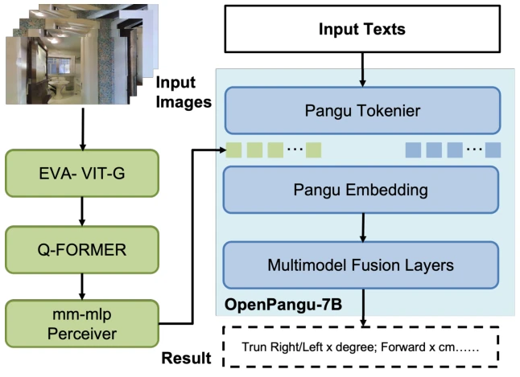
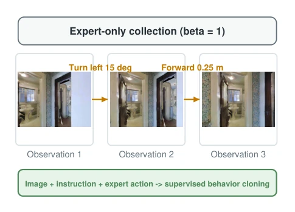
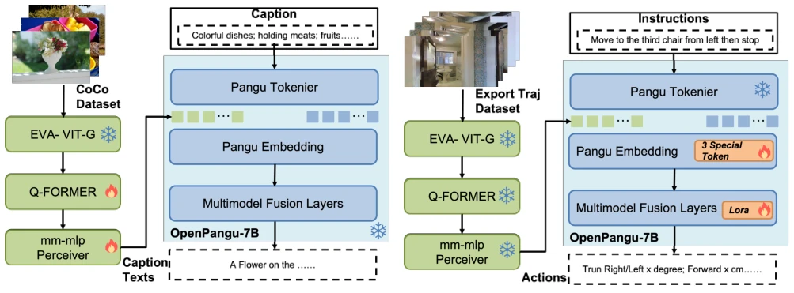
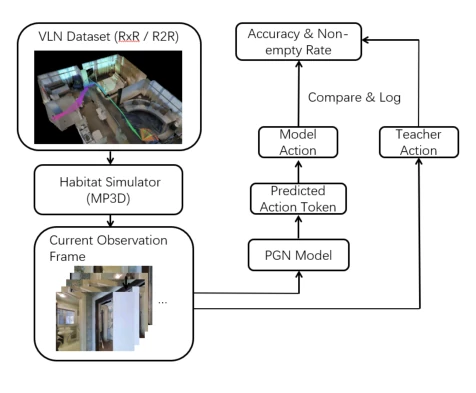
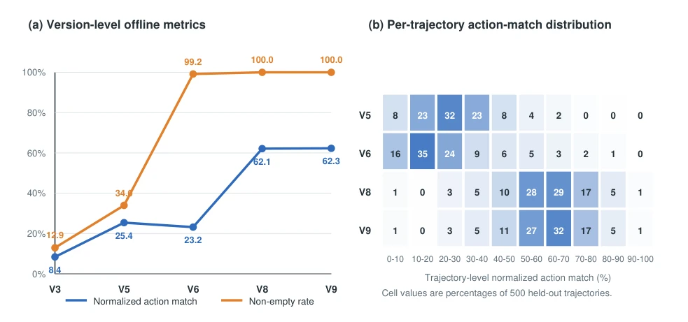

This paper attempts to embed the Pangu large model into the embodied navigation domain. It sounds grand, but upon closer inspection, it is actually an "honor student in offline simulators". The PGN system is based on OpenPangu-7B, conducting two-stage training: the first stage aligns visual language, the second stage uses LoRA to fine-tune navigation. Most ironically, the evaluation is conducted only in "teacher-forced" offline mode; predicted actions are never executed, only the matching degree is calculated. Although NAM reached 62%, it is still far from truly "knowing how to walk". The adaptation of Ascend 910B is quite practical, but making VLN a pure prediction task, isn't it somewhat downgrading embodied intelligence to "picture description"? This kind of "predict only, do not execute" evaluation inevitably raises doubts about its practical deployment value in the embodied field, after all, the core of navigation is closed-loop control rather than open-loop matching.
Embodied navigation (VLN) requires agents to combine visual perception, language understanding, and spatial reasoning [1]. Existing multimodal large models (MLLM) although visual-language representation is strong [2], directly used for continuous environment navigation face four major challenges: vision-language alignment, temporal input compression, action space implementation, and hardware training stability. Especially when training 7B models on Ascend NPU, half-precision operations may be unstable [3]. Existing work such as R2R [1] or VLN-CE [8] is mostly based on graphs or specific architectures, while PGN attempts to utilize Foundation Model generalization ability, addressing the aforementioned constraints through two-stage alignment, avoiding the high cost of training large models from scratch.

Figure 1. PGN system topology. Five temporally ordered observations pass through the shared EVA-ViT-G, Q-Former, and multimodal MLP pathway. Their visual tokens are assembled with the tokenized navigation instruction in the OpenPangu-7B embedding space and processed by the multimodal fusion layers.
PGN adopts a two-stage training architecture. In the first stage, PGMM freezes EVA-ViT-G and OpenPangu-7B, trains Q-Former and MLP projector, aligning text-image on COCO and Visual Genome [9][12]. The second stage freezes the visual path, training only three structure token embeddings and LoRA adapters, utilizing expert trajectories for fine-tuning. The input is a five-frame temporal observation window, the output follows the "reasoning text + action" format, and the action space is {forward, left, right, stop}. The training stack is based on eight Ascend 910B cards, using DeepSpeed ZeRO-2 and mixed precision, with selective FP32 calculation implemented to address FP16 overflow issues. This design preserves the large model's reasoning capability while reducing VRAM pressure through parameter-efficient fine-tuning, achieving the mapping from visual features to the language space.

Figure 2. Example of expert-only trajectory collection. The data pipeline uses β = 1, so every stored action label is produced by the expert policy and is used for supervised behavior cloning.

Figure 3. Two-stage training architecture. Stage 1 freezes EVA-ViT-G and OpenPangu-7B while training the Q-Former and multimodal MLP projector on image-text pairs. Stage 2 freezes the aligned visual pathway and the base language model, while training three structural- token embeddings and LoRA adapters on expert navigation trajectories. Snowflakes and flames denote frozen and trainable components, respectively.
The dataset contains 19,699 expert trajectories, with 500 in the validation set. Evaluation adopts a teacher-forced open-loop mode, where actions are not executed, only the matching degree between predictions and expert actions is calculated. Metrics include NAM (Normalized Action Matching) and NER (Non-empty Rate). The V9 version NAM reaches 62.29%, NER 100%. However, the paper explicitly admits this is offline expert action alignment, without evaluating closed-loop navigation success rate, path efficiency, or error recovery ability. Compared to traditional VLN benchmarks, this is more like an action prediction task rather than true embodied control, with closed-loop evaluation remaining future work.

Figure 4. Offline expert-trajectory alignment evaluation. The held- out trajectory supplies the observation history and teacher action. PGN predicts an action token, which is compared with the teacher action to compute and log alignment metrics. The prediction is not executed to obtain the next observation.

Figure 5. Visualization of the raw results in Table 1. (a) Fuzzy and Non-blank are shown using the revised NAM and NER terminology. (b) The raw interval counts for versions with internally consistent 500-trajectory totals are converted to percentages and displayed as a heatmap. V3 is omitted from the heatmap because its recorded counts sum to 56.